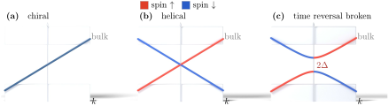

Advanced Quantum Materials 2027 · All lectures · Lecture notes
Session 3. Topological Band Structure Theory
3.8 Three topological material classes
With the general tools in place, let us name three classes of topological matter, before we build explicit models for two of them.
Chern insulators. They have a bulk Chern number \(C \neq 0\) and chiral edge states, and time-reversal symmetry is necessarily broken, since we will see in Section 3.10 that time-reversal symmetry forces \(\sigma_{xy}=0\). Without a backscattering channel there are no electrical losses at the edge, which makes them an attractive platform for dissipationless electronics.
Quantum spin Hall insulators. They are two copies of a Chern insulator, one for each spin, with opposite Chern numbers, so the net Chern number vanishes and time-reversal symmetry is preserved. However, the edge states are helical, meaning that spin-up and spin-down propagate in opposite directions along the same edge. This is the natural platform for dissipationless spin transport, which is spintronics.
Topological superconductors. They combine a bulk superconducting gap with gapless surface excitations that are their own antiparticle, which are called Majorana excitations. Since the corresponding quantum information is stored non-locally, the usual local decoherence channels do not act on it directly, and this is the basis of topological quantum computing. We will build the minimal model for this case, the Kitaev chain, in session 5, and we will see there that it is exactly the same model as the one that we construct next.

Which class has time-reversal symmetry, zero total Chern number and edge states with opposite directions for opposite spins?
Show the answers
- A. ✓ True
This is true. It is made of two copies of a Chern insulator with opposite Chern numbers. The total Chern number vanishes, and the edge states of the two spins form a helical pair.
- B. ✗ False
This is false. A Chern insulator with \(C=1\) has one chiral mode at each edge and \(\sigma_{xy}=e^2/h\), and it needs broken time-reversal symmetry. Its total Chern number is not zero.
- C. ✗ False
This is false. A trivial insulator has \(C=0\) and time-reversal symmetry, but its ribbon spectrum has a gap with nothing inside, as for the staggered potential in the figure of the honeycomb lattice. It has no edge states.
3.9a The SSH model as a minimal one-dimensional topological insulator
We now build the simplest model that shows this physics explicitly, which is the Su-Schrieffer-Heeger (SSH) chain. It looks too simple to be useful, but we should take it seriously, also because the simplest model for a topological superconductor, the Kitaev chain, is exactly this model written in terms of Majorana operators.
We take a one-dimensional lattice with two sites per unit cell, \(A\) and \(B\), and two hopping amplitudes. The first one is an intracell hopping \(t\), within a unit cell, and the second one is an intercell hopping fixed to \(1\), between neighboring unit cells. Let us first take the extreme limit in which the intracell hopping dominates, \(t \gg 1\), so that the chain is fully dimerized with alternating bonds. Strong bonds of strength \(t\) couple the sites \((0,1)\), \((2,3)\), \((4,5)\), … and the coupling between \((1,2)\), \((3,4)\), …is negligible. Each dimer is then an isolated two-level system with bonding and antibonding eigenstates at energies \(\pm t\). The spectrum of the whole chain is this pair of levels repeated once for each dimer, and there is nothing at zero energy.
A chain has four dimers with the intracell hopping \(t\) and no hopping between different dimers. How many levels are at the energy \(+t\) and how many are at zero energy?
Show the answers
- A. ✗ False
This is false. Each dimer is the matrix with \(t\) off the diagonal and gives \(\pm t\). The trace of the Hamiltonian is zero, but eight levels at \(+t\) would give \(8t\).
- B. ✓ True
This is true. Each dimer has a bonding level at \(-t\) and an antibonding level at \(+t\). Four dimers give four levels at each energy, and no site is left uncoupled.
- C. ✗ False
This is false. Each dimer gives one level at \(+t\) and one at \(-t\), so the number at \(+t\) equals the number at \(-t\). Four dimers use all eight sites, so with four levels at \(+t\) the other four are at \(-t\) and none is left at zero.